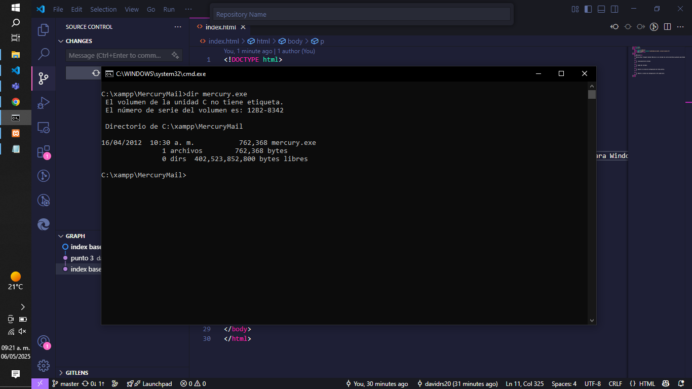
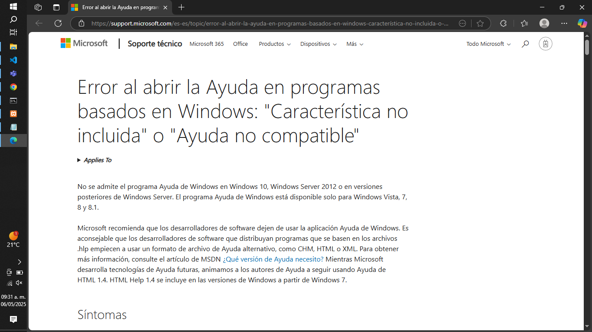
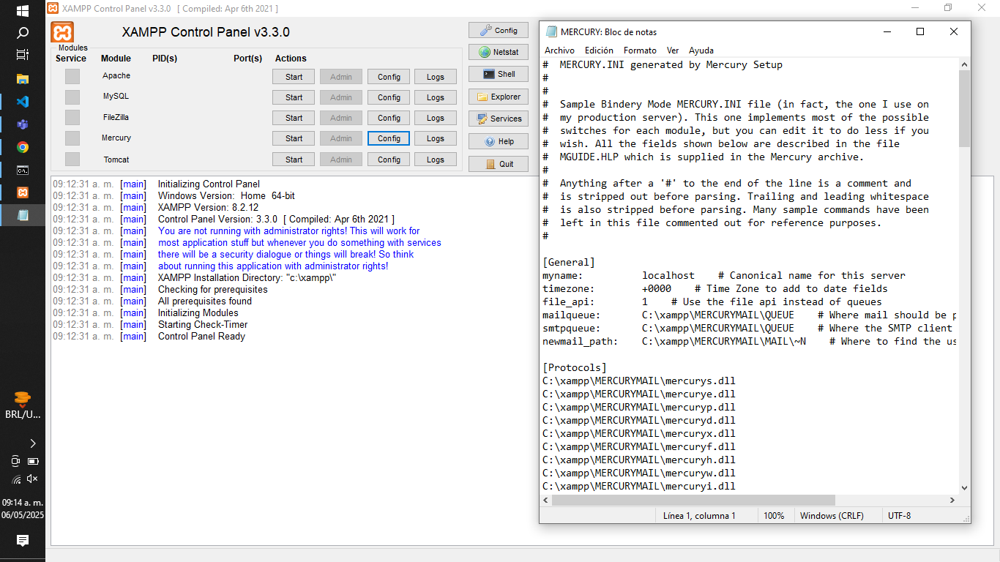
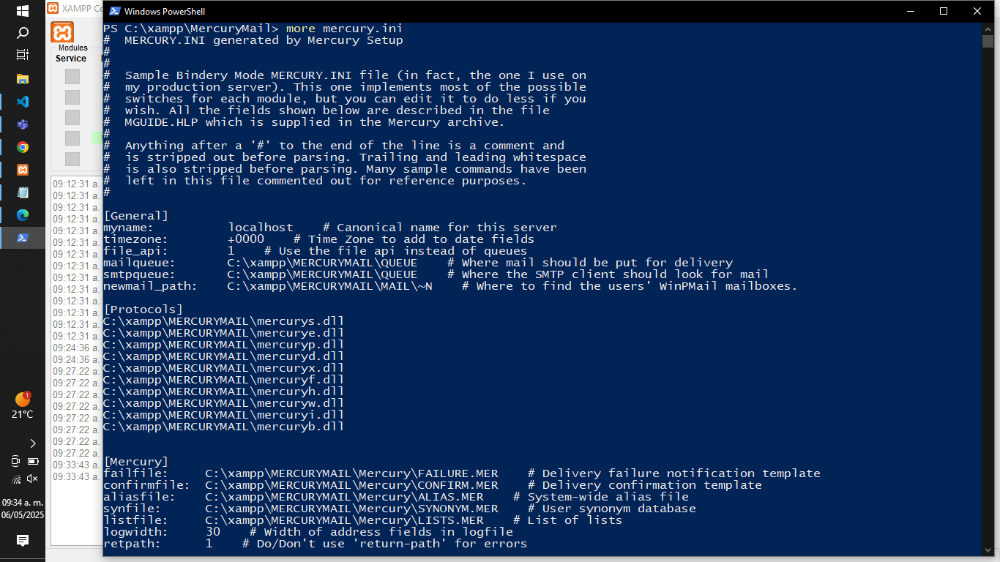
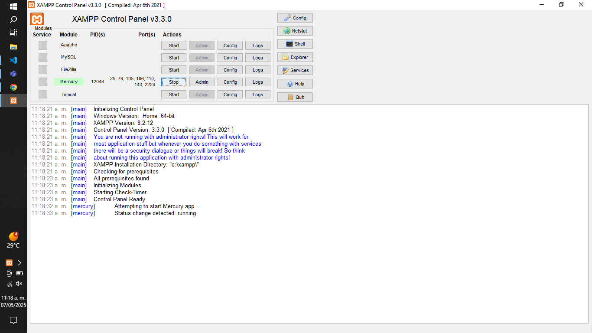
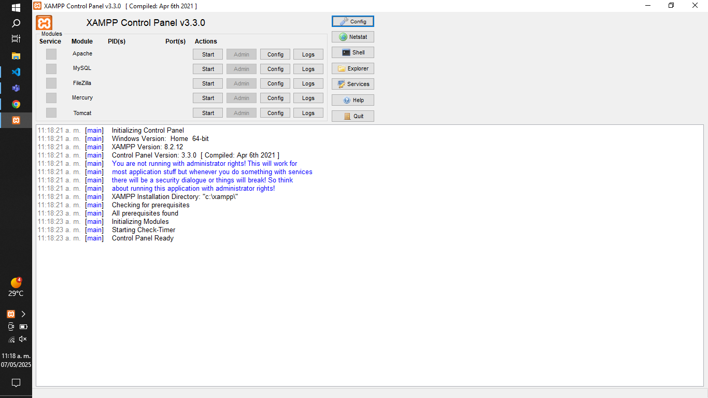
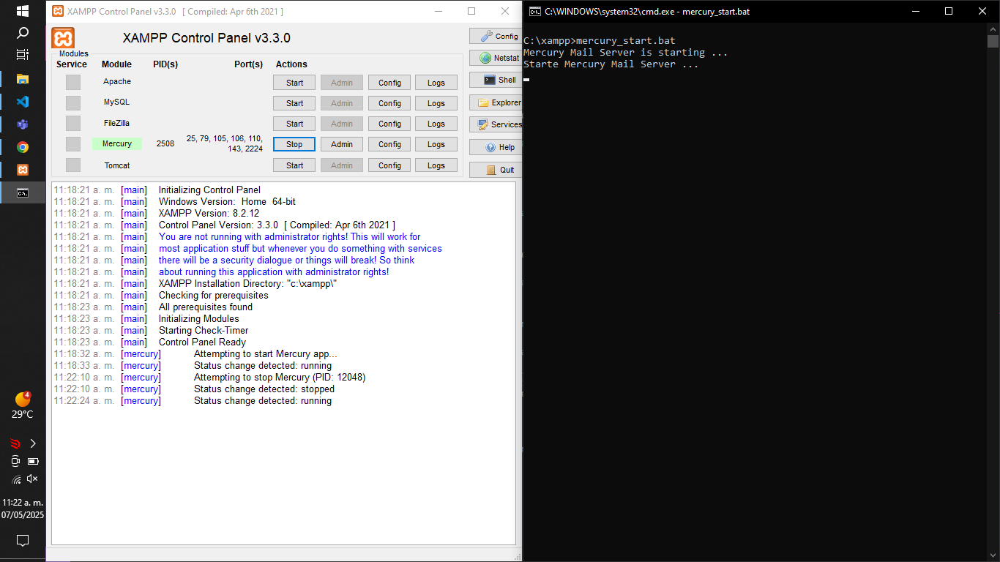
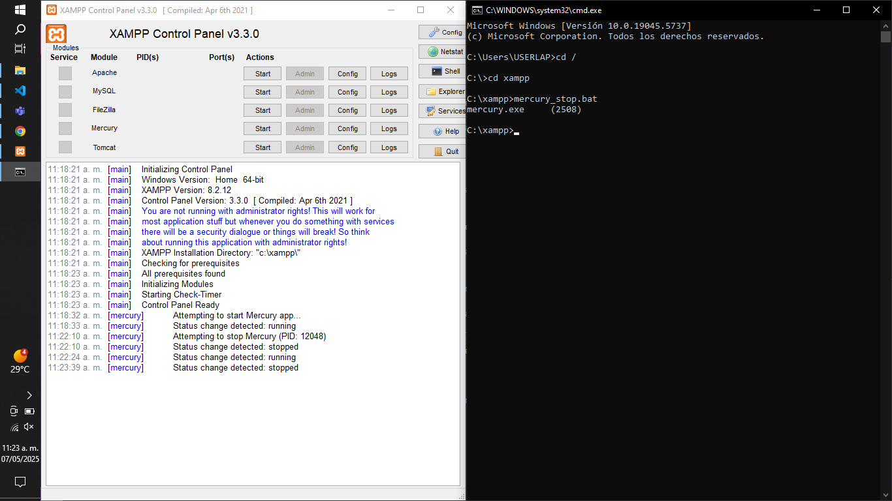

Mercury
Mercury Mail Transport System (Mercury) es un servidor de correo electrónico gratuito para Windows, diseñado para manejar envío (SMTP), recepción (POP3) y distribución interna de correos. Es utilizado principalmente en redes pequeñas o medianas, y puede integrarse con clientes como Pegasus Mail. Ofrece buena fiabilidad y es fácil de configurar.
- 1. Localización del servidor.


- 3. Muestre el archivo de configuración de forma grafica.

- 4. Muestre e archivo de configuración en PS usando more.

- 5. Inicie el servidor mediante XAMPP.

- 6. Detenga el servidor mediante XAMPP.

- 7. Inicie el servidor mediante COMANDO CMD compruebe en interfaz de XAMPP.

- 8. Detenga el servidor mediante COMANDO CMD compruebe en interfaz de XAMPP.
